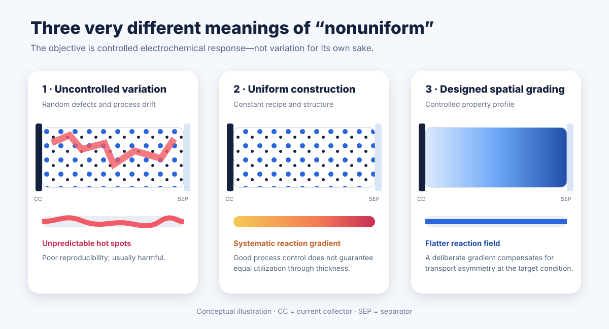
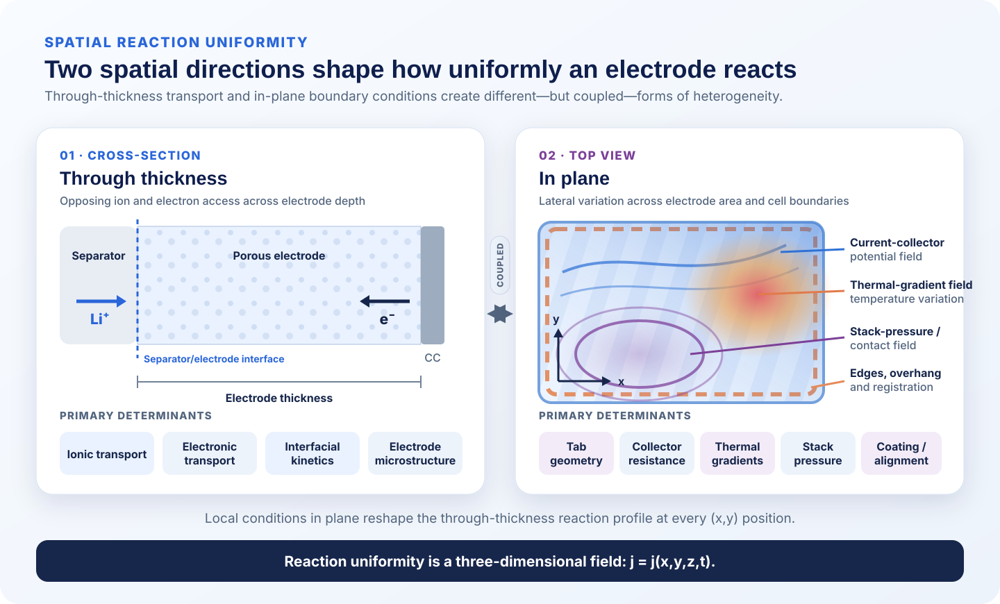
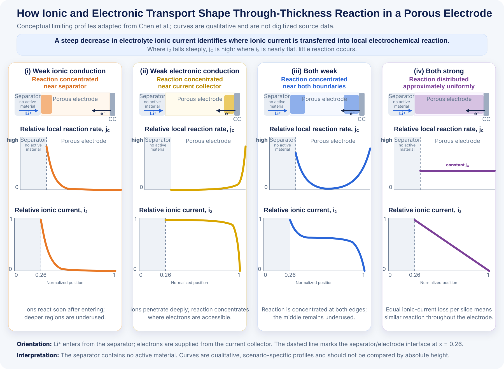
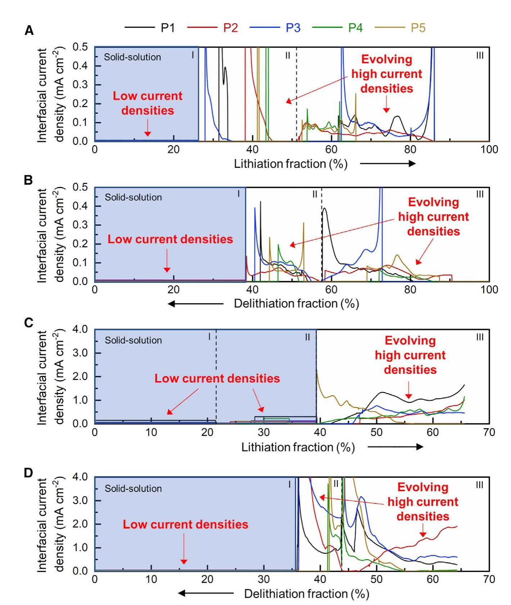
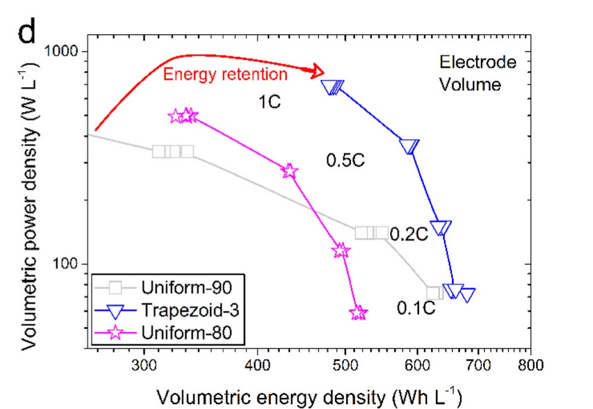
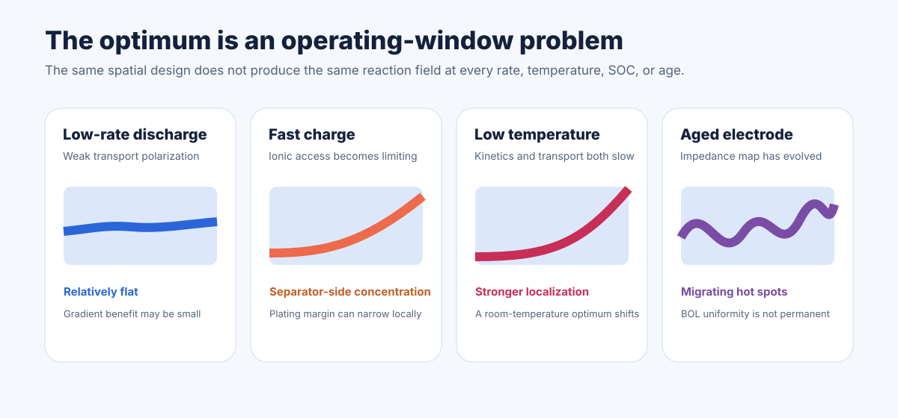
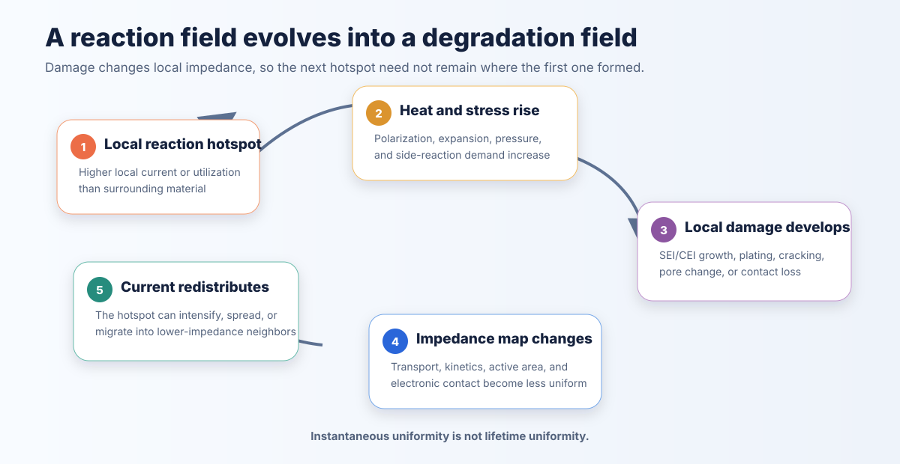

1. Uniform Construction and Uniform Response Are Different Layers
Electrode quality control is built around uniform coating thickness, areal loading, density, porosity, composition, particle distribution, and binder and carbon dispersion. These controls remain indispensable: random variation creates local resistance, capacity mismatch, adhesion problems, drying defects, and poor cell-to-cell consistency.
But these metrics describe how an electrode was made. They do not directly show how it reacts. Local current density, state of charge (SOC), overpotential, heat generation, and degradation can vary even when every conventional manufacturing metric is within specification.

| Causal layer | Representative quantities | Nature |
|---|---|---|
| Material distribution | Active material, carbon, binder, additives, and dispersion | Manufacturing input |
| Electrode structure | Loading, thickness, density, porosity, tortuosity, pore topology, contact | Manufactured architecture |
| Electrochemical response | Local interfacial current, SOC, overpotential, utilization, and heat | Condition-dependent operating field |
| Degradation response | Local plating, SEI/CEI growth, cracking, contact loss, and gas | Evolving consequence that feeds back into structure and current |
This sequence—material distribution → electrode structure → reaction field → degradation field—is the article’s central framework. Manufacturing controls the first two layers directly. Cell operation reveals the third. Aging writes the fourth back into the electrode.
2. What Creates a Spatial Reaction Field?
A reaction field is the position- and time-dependent distribution of electrochemical transfer inside an electrode. It is governed by coupled electrolyte-phase potential, solid-phase potential, electrolyte concentration, exchange-current density, active surface area, equilibrium-potential slope, solid diffusion, and local SOC. “The side with easier access reacts more” is a useful intuition, but the actual field emerges from all of these quantities together. In particular, Wang and Tang showed that the slope of equilibrium potential versus SOC can promote or suppress nonuniform reaction even when transport properties are unchanged.[9]

2.1 Through-thickness heterogeneity
Li+ enters through electrolyte-filled pores from the separator, while electrons enter through the solid network from the current collector. Local reaction continuously transfers current between these phases. Weak ionic conduction tends to concentrate reaction near the separator; weak electronic conduction can pull it toward the current collector. If both transport pathways are sufficiently strong relative to kinetic demand, reaction can become much flatter.[1]

Thickness, pore tortuosity, electrolyte conductivity, solid-network conductivity, active surface area, particle diffusion, and SOC-dependent kinetics all change the balance. The reaction field can also reverse or migrate as current direction and state of charge change.
2.2 In-plane heterogeneity
Across the width and length of a pouch or prismatic cell, tab placement and current-collector resistance create potential gradients. Edge and overhang geometry, coating registration, weld resistance, temperature, stack pressure, electrolyte distribution, and local contact add further variation. A coating may therefore be uniform through thickness yet carry more current near a tab, in a warmer region, or where pressure and wetting lower impedance.
2.3 Particle-scale heterogeneity
Within the same local electrode volume, particles differ in size, surface condition, diffusion length, electronic contact, electrolyte access, and phase state. Only a fraction of nominal surface may carry substantial current at a given moment. Microstructure-resolved X-ray nano-CT and modeling have directly connected real particle shape, size distribution, pore structure, and calendering to heterogeneous current and lithiation.[8] Electrode-scale transport sets the local boundary conditions; particle-scale thermodynamics and kinetics decide how that demand is distributed among particles.
3. Heterogeneity Is Dynamic, Not Merely Structural
Even if the electrode-scale transport field were fixed, the reaction surface itself would remain dynamic: different particles and phase boundaries become active at different SOCs and imposed currents.
Agrawal and Bai used operando optical measurements to show that graphite reaction depends on changing populations of active particles and phase boundaries. The inferred working current densities at active interfaces were reported to be two to three orders of magnitude above an average calculated using total BET surface area, showing that only a limited and evolving fraction of nominal surface carries substantial current. A tenfold increase in imposed current did not simply increase every particle’s local current tenfold because the active population changed as well.[2]

The lesson is broader than graphite: phase transformation, particle activation, and microstructural access can concentrate reaction even without a visible coating defect. A manufacturing map is therefore not a reaction map—and a reaction map at one instant is not a lifetime map.
4. When Deliberate Gradients Help
Spatial grading is a compensation strategy, not a menu of improvements. Its direction and magnitude must address a demonstrated limitation.
| Controlled gradient | Primary intended effect | Principal tradeoff or risk |
|---|---|---|
| Porosity / tortuosity | Improve electrolyte transport and distribute ionic access | Lower volumetric active-material fraction; calendering control |
| Conductive additive | Modify electronic conductivity and current transfer | Displaces active material; may obstruct pores |
| Active-material fraction | Redistribute local reaction demand | Changes local capacity and mechanical properties |
| Particle size / morphology | Modify diffusion length, area, packing, and kinetics | Surface reactivity, side reactions, and coupled porosity changes |
| Binder / mechanical phase | Modify adhesion, compliance, contact, and stress transfer | Electronic/ionic obstruction and drying migration |
| Surface chemistry / wettability | Modify electrolyte access and interfacial kinetics | Durability, process compatibility, and aging drift |
A gradient useful at one thickness, chemistry, rate, or temperature can be neutral or harmful under another condition. Correlated variables also complicate interpretation: changing particle size may simultaneously change porosity, tortuosity, surface area, binder demand, and drying behavior.
Cheng and co-workers provide a controlled experimental example. Their approximately 100 μm LFP electrodes had the same total mass, overall 90:5:5 active-material/carbon/binder ratio, and similar overall porosity, but different through-thickness placement. A trapezoidal design concentrated active material in the center and carbon/binder near both boundaries. At 1C it delivered about 120 mAh g−1 versus 43 mAh g−1 for the uniform 90:5:5 electrode; at 500 Wh L−1, power increased from roughly 100 to 630 W L−1.[6]

Why grading can fail
Grading can add layer interfaces, adhesion discontinuities, conductive-network breaks, drying and binder-migration effects, and profile-to-profile process variability. The manufactured gradient may depart from the modeled one, face the wrong direction, or address a limitation too weak to matter at modest loading or low rate. In Chowdhury and co-workers’ bilayer NMC532 cathode, high-rate capacity improved, but the advantage was small at 1C and did not persist as a clear cycling-retention benefit after 100 cycles.[4] Designed nonuniformity therefore requires tighter—not looser—process control and a fair, mass- and thickness-matched comparison.
5. The Optimum Depends on the Operating Window
There is no single architecture that reacts uniformly at every C-rate, SOC, temperature, current direction, thickness, electrolyte conductivity, pulse duration, and age. At low rate, transport gradients may be weak. Fast charge strengthens electrolyte and kinetic polarization. Low temperature slows both ion transport and charge transfer. Aging creates spatially varying impedance, wetting, contact, and active area.

The objective also matters. An architecture optimized for a flat instantaneous reaction rate is not necessarily the one that produces the flattest cumulative SOC, lowest plating risk, minimum heat, or longest life. A locally conservative current distribution may intentionally sacrifice utilization in one region to protect a vulnerable interface elsewhere.
6. Why Thick Electrodes Raise the Stakes
Increasing areal loading reduces the fraction of cell mass and volume occupied by current collectors, separator, and packaging, but it also lengthens transport pathways and makes full electrode utilization more difficult. Electrolyte concentration and potential gradients grow nonlinearly with rate and thickness; through-thickness SOC separation can increase; wetting takes longer and trapped gas or incomplete saturation becomes more consequential.
Calendering adds a coupled tradeoff. Higher density can improve electronic contact and volumetric energy while reducing pore volume and increasing ionic tortuosity. Simply raising porosity can recover transport but surrender the volumetric-energy advantage that motivated a thick electrode. Charge and discharge may also prefer different profiles because current direction, phase state, and kinetic constraints differ.
Huang and co-workers fabricated a thick, three-layer graphite electrode with porosity increasing toward the separator. Relative to a homogeneous electrode, it showed better capacity and efficiency at high lithiation rates. The authors combined voltage behavior, post-mortem SEM/EDS evidence, and modeling at a local plating threshold to conclude that lithium plating was significantly suppressed, while acknowledging that the exact structure was not universally optimal.[5]
The durable principle is not “more porosity everywhere.” It is to place ionic transport capacity where it protects utilization and plating margin, while preserving density where additional pore volume would add little value.
7. From Reaction Hot Spots to Degradation Hot Spots
7.1 Reaction heterogeneity becomes degradation heterogeneity
A hotspot carries more local reaction, then generates more heat, stress, interphase growth, or structural damage. Those changes alter local impedance and active area, causing current to redistribute—sometimes away from the damaged region and into its neighbors. The field is therefore a feedback loop: reaction hotspot → local heat, stress, or interphase growth → impedance change → current redistribution.

In graphite, separator-side regions can approach full lithiation and lithium-plating conditions while deeper material remains underused. In silicon, unequal lithiation produces unequal expansion, pore closure, contact loss, repeated SEI repair, and pressure redistribution. In Ni-rich cathodes, local SOC and strain can amplify particle cracking, surface reconstruction, and oxygen activity. A flatter instantaneous reaction rate may reduce some hotspots, but the best lifetime design must also consider where stress and interphase instability accumulate.
7.2 Cell-scale current redistribution
In-plane current gradients add a larger spatial scale. A validated pouch-cell model by Drummond and co-workers predicted that deliberately graded in-plane resistance could flatten current distribution and shift the modeled plating threshold from 2.4C to 4.3C for the studied configuration.[7] This demonstrates a design possibility, not established mass-production practice or direct experimental proof of reduced plating.
8. Measuring the Uniformity That Matters
No single measurement spans particle, electrode, and cell scales. Many spatial diagnostics are specialized, destructive, or model-dependent; terminal voltage and impedance can also be non-unique because different internal fields may produce similar external responses.
| Evidence class | Representative methods | Important limitation |
|---|---|---|
| Manufacturing metrology | Cross-web/down-web loading and thickness; density; adhesion; resistivity; cross-sectional composition, porosity, and tortuosity | Measures inputs and structure, not reaction directly |
| Spatial electrochemical diagnostics | Synchrotron X-ray diffraction tomography; X-ray absorption/fluorescence mapping; neutron radiography; optical particle tracking; segmented current collectors; local thermal, pressure, and displacement sensing | Often specialized, resolution-limited, geometry-dependent, or difficult in commercial cells |
| Model-based inference | Porous-electrode/electrothermal models constrained by voltage, temperature, reference electrodes, EIS, or segmented-current data | Parameter and solution non-uniqueness; validation is essential |
| Post-mortem validation | Location-specific SOC/speciation, plating maps, separator imprints, cross-sections, microscopy, spectroscopy, and matched-SOC teardown | Destructive; relaxation and air/temperature exposure can alter the state |
Spatial impedance or SOC mapping is not routine in an intact commercial cell: it may require segmented hardware, local probes, destructive cross-sections, advanced operando spectroscopy, or an inversion model. The practical strategy is to calibrate scalable manufacturing proxies against richer spatial evidence during development, then monitor the validated proxies in production.
9. A Better Manufacturing Framework
- Control unwanted variation. Establish reproducible loading, thickness, density, composition, adhesion, wetting, registration, and pressure.
- Model the resulting transport and reaction field. Determine whether the nominally uniform architecture creates a systematic gradient at target loading and rate.
- Introduce controlled spatial design only where justified. Grade porosity, composition, particle size, conductive network, or mechanics to compensate for a demonstrated limitation.
- Validate realistically. Test at target electrolyte quantity, pressure, temperature, rate, SOC window, pulse duration, formation protocol, and aging state.
The objective is not the flattest possible reaction field at any cost. Added carbon or binder displaces active material; higher porosity lowers volumetric energy; smaller particles increase surface area and side reactions; multilayer coating adds complexity. The engineering target is the best balance among usable energy, power, lifetime, safety, manufacturability, and cost.
Is the electrode uniform in the way that matters electrochemically—or only in the way that is easiest to measure?
References and Figure Licenses
Figure-use note: The three-uniformities, spatial-directions, Chen teaching, condition-dependent, and degradation-feedback diagrams are original Winigen Materials graphics. The Agrawal–Bai and Cheng panels are reproduced from articles whose deposited PDFs explicitly state CC BY 4.0; panel separation and cropping are disclosed in their captions. No figure is reproduced from the remaining papers.
- Chen, Z.; Danilov, D. L.; Eichel, R.-A.; Notten, P. H. L. On the reaction rate distribution in porous electrodes. Electrochemistry Communications 121, 106865 (2020). doi:10.1016/j.elecom.2020.106865.
- Agrawal, S.; Bai, P. Dynamic interplay between phase transformation instabilities and reaction heterogeneities in particulate intercalation electrodes. Cell Reports Physical Science 3, 100854 (2022). doi:10.1016/j.xcrp.2022.100854.
- Cheng, C.; Drummond, R.; Duncan, S. R.; Grant, P. S. Combining composition graded positive and negative electrodes for higher performance Li-ion batteries. Journal of Power Sources 448, 227376 (2020). doi:10.1016/j.jpowsour.2019.227376.
- Chowdhury, R. et al. Revisiting the promise of bi-layer graded cathodes for improved Li-ion battery performance. Sustainable Energy & Fuels 5, 5193–5204 (2021). doi:10.1039/D1SE01077H.
- Huang, C.-K. et al. Gradient porosity electrodes for fast charging lithium-ion batteries. Journal of Materials Chemistry A 10, 12114–12124 (2022). doi:10.1039/D2TA01707E.
- Cheng, C.; Drummond, R.; Duncan, S. R.; Grant, P. S. Extending the energy-power balance of Li-ion batteries using graded electrodes with precise spatial control of local composition. Journal of Power Sources 542, 231758 (2022). doi:10.1016/j.jpowsour.2022.231758.
- Drummond, R. et al. Graded Lithium-Ion Battery Pouch Cells to Homogenise Current Distributions and Reduce Lithium Plating. Journal of The Electrochemical Society 172, 010518 (2025). doi:10.1149/1945-7111/ada751.
- Lu, X. et al. 3D microstructure design of lithium-ion battery electrodes assisted by X-ray nano-computed tomography and modelling. Nature Communications 11, 2079 (2020). doi:10.1038/s41467-020-15811-x.
- Wang, F.; Tang, M. Thermodynamic Origin of Reaction Non-Uniformity in Battery Porous Electrodes and Its Mitigation. Journal of The Electrochemical Society 167, 120543 (2020). doi:10.1149/1945-7111/abb383.
Connect Material Selection with Electrode Architecture
Share your chemistry, target loading, density, porosity, electrolyte system, rate, and cell format. Winigen Materials can help connect material specifications and finished-electrode requirements with a practical validation plan.
Contact Winigen MaterialsAll original Winigen Materials diagrams and visualizations on this page are © Winigen Materials. They may not be reproduced, modified, or redistributed without permission.